Sortieren
Contents
Laufzeitmessung in Python
Verwendung der timeit-Bibliothek für die Hausaufgabe.
- Importiere das timeit-Modul: import timeit
- Teile den Algorithmus in die Initialisierungen und den Teil, dessen Geschwindigkeit gemessen werden soll. Beide Teile werden in jeweils einen (mehrzeiligen) String eingeschlossen:
+--------+ +----+ setup = """ prog = """ | algo | --> |init| +----+ +----+ | | +----+ |init| |prog| | | +----+ +----+ | | +----+ """ """ | | --> |prog| +--------+ +----+
- aus den beiden Strings wird ein Timeit-Objekt erzeugt: t = timeit.Timer(prog, setup)
- Frage: Wie oft soll die Algorithmik wiederholt werden
- z.B. N = 1000
- Zeit in Sekunden für N Durchläufe: K = t.timeit(N)
- Zeit für 1 Durchlauf: K/N
Sortierverfahren
Motivation
Def: Ein Sortierverfahren ist ein Algorithmus, der dazu dient, die Elemente in einem Container in eine aufsteigende Reihenfolge zu bringen (siehe Wikipedia).
Anwendungen
- Sortierte Daten sind häufig Vorbedingungen für Suchverfahren (Speziell für effiziente Suchalgorithmen mit Komplexität
)
- Darstellung von Daten gemäß menschlicher Wahrnehmung
- Aus programmiertechnischer Anwendungssicht hat das Sortierproblem allerdings heute an Relevanz verloren, weil
- gängige Programmiersprachen heute bereits geeignete Sortierfunktionen zur Verfügung stellen. Der Programmierer braucht sich deshalb in den meisten Fällen nicht mehr um die Implementierung von Sortieralgorithmen zu kümmern. In C/C++ sorgt dafür beispielsweise die Funktion std::sort.
- die Hardware (z.B. Größe des RAM und der Festplatte) heute weniger limitierenden Charakter hat als vor 50 Jahren, so dass Standardsortierverfahren meist ausreichen, während komplizierte (z.B. speicher-sparende) Algorithmen nur noch in Ausnahmefällen nötig sind.
- Die Kenntnis grundlegender Sortieralgorithmen ist trotzdem immer noch nötig: Einerseits kann man vorgefertigte Bausteine nur dann optimal einsetzen, wenn man weiß, was hinter den Kulissen passiert und andererseits verdeutlicht gerade das Sortierproblem wichtige Prinzipien der Algorithmenentwicklung und -analyse in sehr anschaulicher Form.
Vorraussetzungen
Ordnungsrelation
Über den zu sortierenden Elementen muss eine Relation definiert sein, die die Axiome einer totalen Ordnung erfüllt (siehe Wikipedia). Eine totale Ordnung über einer Menge
ist eine binäre Relation
, die transitiv, antisymmetrisch und total ist. Dass heißt, für alle
gilt:
-
(antisymmetrisch)
-
(transitiv)
-
(total)
Bemerkung: aus 3. folgt (reflexiv)
Die Forderung, dass die Ordnung total sein muss, wird verständlich, wenn man ihr Gegenteil betrachtet: Ist die Ordnung nämlich nur partiell, gibt es Elemente , die nicht vergleichbar sind. Die Relation
kann dann das Ergebnis "unknown" liefern (statt true oder false), und das ist beim Sortieren nicht erlaubt.
Aus der Definition der Relation folgen automatisch Definitionen für die anderen Vergleichsrelationen
, siehe Hausaufgabe.
Datenspeicherung
Wir nehmen an, dass die Daten in einem Array a vorliegen:
- Array
+---+---+---+---+---+---+---+---+---+
| | | | | | | | | |
+---+---+---+---+---+---+---+---+---+
\________________ ____________________/
\/
N Elemente
Datenelemente können über Indexoperation a[i] gelesen, überschrieben und miteinander vertauscht werden. Das hat den Vorteil, dass wir auf die Elemente in beliebiger Reihenfolge effizient zugreifen können. Dies ist für fast alle Sortieralgorithmen nützlich.
Früher wurden Daten oft in verketteten Listen gespeichert:
- Vekettete Liste
+---+ +---+ +---+
| | --> | | --> | | --> Ende
+---+ +---+ +---+
Jeder Knoten der Liste enthält ein Datenelement und einen Zeiger auf den nächsten Knoten. Dadurch ist ein effizienter Zugriff nur auf den Nachfolger eines gegebenen Elements möglich. Zum effizienten Sortieren ist dann vor allem merge sort geeignet. Wir gehen in der Vorlesung nicht weiter auf verkettete Listen ein.
Nachbedingungen
Nach dem Sortieren erfüllen alle Elemente des Arrays folgendes Axiom:
Für beliebige Indizes gilt:
.
Ein Testprogramm kann somit die korrekte Sortierung überprüfen, indem es die Bedingung für alle
möglichen Paare von Indizes
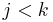
prüft. In Wirklichkeit sind allerdings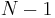
Tests ausreichend, siehe Hausaufgabe.Stabilität
Oft werden Arrays sortiert, die strukturierte Datenelemente enthalten. Beispielsweise könnten die Datenelemente den Typ Student haben, der aus dem Namen und der AlDa-Note zusammengesetzt ist. Das Array sei zunächst alphabetisch nach Namen sortiert:
[("Adam", 1.3), ("Albrecht", 1.0), ("Meier", 1.3), ("Müller", 2.0), ("Wolf", 1.0)]
Wir wollen das Array nun nach Noten sortieren. Da aber einige Teilnehmer die gleiche Note haben, stellen wir zusätzlich die Forderung auf, dass die Namen mit gleicher Note alphabetisch sortiert bleiben sollen. Allgemein definiert man:
Def: Ein Sortierverfahren heißt stabil, wenn die relative Reihenfolge gleicher Schlüssel durch die Sortierung nicht verändert wird.
Im Beispiel erzeugt ein stabiles Sortierverfahren die Ausgabe
[("Albrecht", 1.0), ("Wolf", 1.0), ("Adam", 1.3), ("Meier", 1.3), ("Müller", 2.0)]
während die Ausgabe
[("Albrecht", 1.0), ("Wolf", 1.0), ("Meier", 1.3), ("Adam", 1.3), ("Müller", 2.0)]
nicht stabil ist (die Elemente ("Adam", 1.3), ("Meier", 1.3) sind vertauscht).
Selection Sort
Selection Sort ist der wohl einfachste Sortieralgorithmus, den man sich dadurch sehr leicht merken kann. Er sortiert ein gegebenes Array in-place. Das heißt, das Sortieren verändert das gegebene Array direkt und erzeugt kein neues sortiertes Array. Wen man die Daten in der ursprünglichen Reihenfolge noch benötigt, muss man sich vor dem Sortieren eine Kopie anlegen.
Algorithmus
def selectionSort(a): # sort array 'a' in-place
N = len(a) # number of elements
for i in range(N):
# find the smallest element in the remaining array from i to N
min = i # initial guess: a[i] is the smallest element
for j in range(i+1, N):
if a[j] < a[min]:
min = j # element a[j] is smaller => remember its index
a[i], a[min] = a[min], a[i] # swap a[i] with a[min], the smallest element to its right
# (has no effect if i == min)
# now, all elements up to a[i] are at their final position
Beispiel: Sortieren des Arrays [S,O,R,T,I,N,G].
erste Iteration der äußeren Schleife, Zustand vor dem swap: i=0 min +---+---+---+---+---+---+---+ | S | O | R | T | I | N | G | +---+---+---+---+---+---+---+
erste Iteration der äußeren Schleife, Zustand nach dem swap: +---|---+---+---+---+---+---+ | G | O | R | T | I | N | S | +---|---+---+---+---+---+---+
zweite Iteration der äußeren Schleife:
i=1 min
+---|---+---+---+---+---+---+
| G | O | R | T | I | N | S |
+---|---+---+---+---+---+---+
weitere Iterationen:
i=2 min
+---+---|---+---+---+---+---+
| G | I | R | T | O | N | S |
+---+---|---+---+---+---+---+
i=3 min +---+---+---|---+---+---+---+ | G | I | N | T | O | R | S | +---+---+---|---+---+---+---+
i=4 min +---+---+---+---+---+---+---+ | G | I | N | O | T | R | S | +---+---+---+---+---+---+---+
i=5 min +---+---+---+---+---+---+---+ | G | I | N | O | R | T | S | +---+---+---+---+---+---+---+
i=6
min
+---+---+---+---+---+---+---+
| G | I | N | O | R | S | T |
+---+---+---+---+---+---+---+
Laufzeit
Da in jeder Iteration der inneren Schleife ein Vergleich a[j]< a[min] durchgeführt wird, ist die Anzahl der Vergleiche ein gutes Maß für den Aufwand des Algorithmus und damit für die Laufzeit. Sei C(N) die Anzahl der notwendigen Vergleiche, um ein Array der Größe N zu sortieren. Die Arbeitsweise des Algorithmus kann dann so beschrieben werden: Führe N-1 Vergleiche aus, bringe das kleinste Element an die erste Stelle, und fahre mit dem Sortieren des Rest-Arrays (Größe N-1) rechts des ersten Elements fort. Dafür sind nach Definition noch C(N-1) Vergleiche nötig. Es gilt also:
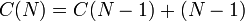
C(N-1) können wir nach der gleichen Formel einsetzen, und erhalten:
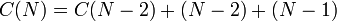
Wir können in dieser Weise weiter fortfahren. Bei C(1) wird das Einsetzen beendet, denn für ein Array der Länge 1 sind keine Vergleiche mehr nötig, also C(1) = 0. Wir erhalten somit
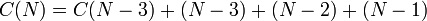
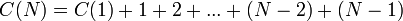
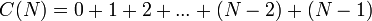
Nach der Gaußschen Summenformel ist dies
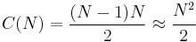
(für große N).
In jedem Durchlauf der äußeren Schleife werden außerdem zwei Elemente ausgetauscht. Es gilt für die Anzahl der Austauschoperationen
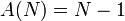
Stabilität
Selection Sort ist nicht stabil, weil die swap-Operation das Element a[i] nach hinten kopiert. Falls es ein Element a[k] gibt, so dass a[i] == a[k] und i < k < min, gelangt a[i] durch das swap hinter a[k], was nach Definition der Stabilität verboten ist.
Insertion Sort
Insertion Sort ist fast so einfach wie Selection Sort, hat aber den Vorteil, stabil zu arbeiten (wenn es korrekt implementiert ist). Man stellt sich vor, dass die Daten ein Spielkartenblatt bilden, das man nach dem mischen unsortiert aufgenommen hat. Dann geht man die Karten von links nach rechts durch und steckt jede Karte in die passende Lücke, so dass das Blatt am Ende sortiert ist. Bei einem Array muss man die Lücke jeweils erzeugen, indem man Elemente noch rechts verschiebt. Insertion Sort arbeitet ebenfalls in-place.
Algorithmus
def insertionSort(a): # sort 'a' in-place
N = len(a) # number of elements
for i in range(N):
current = a[i] # remember the current element
# find the position of the gap where 'current' is supposed to go
j = i # initial guess: 'current' is already at the correct position
while j > 0:
if current < a[j-1]: # a[j-1] should be on the right of 'current'
a[j] = a[j-1] # move a[j-1] to the right
else:
break # gap is at correct position
j -= 1 # shift gap one index to the left
a[j] = current # place 'current' into appropriate gap
Beispiel: Sortieren des Arrays [S,O,R,T,I,N,G].
erste Iteration der äußeren Schleife hat keinen Effekt: i=0 j=0 +---+---+---+---+---+---+---+ | S | O | R | T | I | N | G | +---+---+---+---+---+---+---+
zweite Iteration der äußeren Schleife, Zustand nach dem break:
i=1 (current='O')
j=0
+---+---+---+---+---+---+---+
| S | S | R | T | I | N | G |
+---+---+---+---+---+---+---+
^ Lücke
zweite Iteration der äußeren Schleife, Zustand 'am Ende: +---+---+---+---+---+---+---+ | O | S | R | T | I | N | G | +---+---+---+---+---+---+---+
dritte Iteration nach dem break und am Ende:
i=2 (current='R')
j=1
+---+---+---+---+---+---+---+
| O | S | S | T | I | N | G |
+---+---+---+---+---+---+---+
^ Lücke
+---+---+---+---+---+---+---+
| O | R | S | T | I | N | G |
+---+---+---+---+---+---+---+
vierte Iteration nach dem break und am Ende:
i=3 (current='T')
j=3 (unverändert, da 'T' < 'S' sofort false liefert)
+---+---+---+---+---+---+---+
| O | R | S | T | I | N | G |
+---+---+---+---+---+---+---+
^ Lücke
+---+---+---+---+---+---+---+
| O | R | S | T | I | N | G |
+---+---+---+---+---+---+---+
fünfte Iterationen nach dem break und am Ende:
i=4 (current='I')
j=0
+---+---+---+---+---+---+---+
| O | O | R | S | T | N | G |
+---+---+---+---+---+---+---+
^ Lücke
+---+---+---+---+---+---+---+
| I | O | R | S | T | N | G |
+---+---+---+---+---+---+---+
sechste Iterationen nach dem break und am Ende:
i=5 (current='N')
j=1
+---+---+---+---+---+---+---+
| I | O | O | R | S | T | G |
+---+---+---+---+---+---+---+
^ Lücke
+---+---+---+---+---+---+---+
| I | N | O | R | S | T | G |
+---+---+---+---+---+---+---+
letzte Iterationen nach dem break und am Ende:
i=6 (current='G')
j=0
+---+---+---+---+---+---+---+
| I | I | N | O | R | S | T |
+---+---+---+---+---+---+---+
^ Lücke
+---+---+---+---+---+---+---+
| G | I | N | O | R | S | T |
+---+---+---+---+---+---+---+
Laufzeit
Bei Selection Sort hängt die Anzahl der notwendigen Vergleiche und damit die Laufzeit davon ab, wie die Elemente vor dem Sortieren angeordnet waren. Wir unterscheiden drei Fälle:
Günstiger Fall
Der günstige Fall tritt ein, wenn das break sofort nach dem ersten Vergleich ausgeführt wird. Dann ist in der inneren Schleife jeweils nur ein Vergleich nötig. Es ist leicht zu erkennen, dass das genau dann passiert, wenn das Array schon vor dem Aufruf von insertionSort sortiert war - dann ist das linke Element von current niemals größer, und somit liefert der Vergleich sofort false. Die Laufzeit
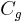
(für "günstig") der letzten Iteration setzt sich somit aus dem Sortieren des Teilarrays bis zur vorletzten Position und dem zusätzlichen Vergleich zusammen: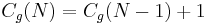
Wir setzen
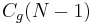
wieder nach der gleichen Formel ein und erhalten: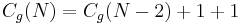
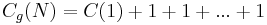
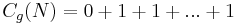
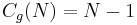
Im günstigen Fall werden also etwa soviele Vergleiche wie die Anzahl der Arrayelemente benötigt.
Ungünstiger Fall
Der ungünstige Fall tritt ein, wenn die Lücke in jeder Iteration ganz nach links, also auf die Position j = 0 geschoben werden muss. Das ist der Fall, wenn das Array anfangs umgekehrt (also absteigend) sortiert war. In der letzten Iteration sind dann nötig, nachdem das linke Teilarray der Größe bereits sortiert wurde. Die Laufzeit
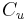
(für "ungünstig") der letzten Iteration ist somit: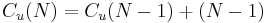
Sukzessives Ersetzen von
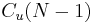
ergibt: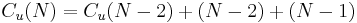
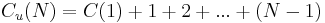
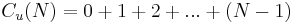
Nach der Gaußschen Summenformel ist dies wiederum
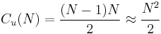
(für große N).
wie bei Selection Sort.
Typischer Fall
Im typischen Fall sind die Daten anfangs zufällig angeordnet, und die innere Schleife bricht manchmal schnell, aber manchmal auch spät ab. Bei zufälliger Anordnung ist beides gleich wahrscheinlich, und die erwartete Laufzeit der inneren Schleife ergibt sich als Durschnitt aller Möglichkeiten
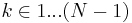
. Die Laufzeit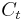
(für "typisch") der letzten Iteration ist jetzt: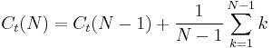
Den Durchschnitt kann man nach der Gaußschen Summenformel analytisch ausrechnen und erhält
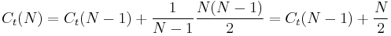
Sukzessives Ersetzen von ergibt:
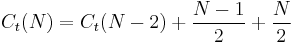
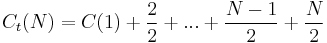
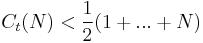
Die Gaußsche Summenformel ergibt jetzt
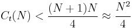
(für große N).
Im typischen Fall benötigt man also halb so viele Vergleiche wie im ungünstigen Fall.
Stabilität
Insertion Sort ist stabil, weil die Lücke nicht weiter nach links verschoben wird, wenn a[j] == current gilt. Gleiche Elemente links von current bleiben dadurch links.
Erweiterung: Shell sort
Mergesort
Algorithmus
Zugrunde liegende Idee:
- Zerlege das Problem in zwei möglichst gleich große Teilprobleme ("Teile und herrsche"-Prinzip -- divide and conquer)
- Löse die Teilprobleme rekursiv
- Führe die Teillösungen über Mischen (merging) in richtig sortierter Weise zusammen.
Der Algorithmus besteht somit aus zwei Teilen
Zusammenführen -- merge
left und right sind zwei sortierte Arrays, die in ein sortiertes Ergebnisarray kombiniert werden, das dann zurückgegeben wird:
def merge(left, right):
res = [] # the result array is initially empty
i, j = 0, 0 # i and j always point to the first element in left and
# right that has not yet been processed (= added to res)
while i < len(left) and j < len(right):
if left[i] <= right[j]: # compare the first unprocessed elements of left and right
res.append(left[i]) # the smallest remaining element is in left => add to res
i += 1 # go to next element in left
else:
res.append(right[j]) # the smallest remaining element is in right => add to res
j += 1 # go to next element in right
# either left or right has been used up, add the remaining elements of the other
while i < len(left):
res.append(left[i])
i += 1
while j < len(right):
res.append(right[j])
j += 1
# the latter two while loops can be abbreviated by Python's slice syntax
# res += left[i:len(left)] + right[j:len(right)]
# (syntax: array[m:n] returns the subarray from index m (inclusive) to index n (exclusive))
return res
Rekursives Sortieren
def mergeSort(a): # sort 'a' out-of-place (i.e. a new sorted array is returned, 'a' is unchanged)
N = len(a) # number of elements
if N <= 1:
return a # arrays with 0 or 1 elements are already sorted => stop recursion
else:
left = a[0:N//2] # slice syntax: left subarray
# N//2 is Python's 'floor division'
right = a[N//2:N] # slice syntax: right subarray
leftSorted = mergeSort(left) # recursively sort left and ...
rightSorted = mergeSort(right) # ... right subarrays
return merge(leftSorted, rightSorted) # merge the sorted parts and return result
Bei der Sortierung mit Mergesort wird das Array immer in zwei fast gleich große Teile geteilt. → Es entsteht ein Binärbaum der Tiefe
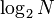
.Beispiel: Sortieren des Arrays [S,O,R,T,I,N,G].
Der Algorithmus zerlegt das Array zunächst in immer kürzere Teilarrays, bis die Länge 1 erreicht wird. Danach werden die Teilarrays Schritt für Schritt sortiert zusammengefügt:
SORTING
Zerlegen: / \
SOR TING
/ \ / \
S OR TI NG
/ / \ / \ / \
S O R T I N G
Zusammenfügen: \ \ / \ / \ /
Schritt 1 S OR IT GN Arraylänge: N/8 => N/4, Vergleiche: 1*0 + 3*1 = 3
\ / \ /
Schritt 2 ORS GINT Arraylänge: N/4 => N/2, Vergleiche: 1*2 + 1*3 = 5
\ /
Schritt 3 GINORST Arraylänge: N/2 => N, Vergleiche: 1*6 = 6
Laufzeit
Man erkennt an der Skizze, dass der Rekursionsbaum für ein Array der Länge N die Tiefe log N hat. Auf jeder Ebene werden weniger als N Vergleiche ausgeführt, so dass insgesamt weniger als N*log N Vergleiche benötigt werden. Dies ist natürlich wesentlich effizienter als die (N-1)*N/2 Vergleiche von Selection oder Insertion Sort.
Ungünstiger Fall
Im ungünstigen Fall kommt in merge() das kleinste Element immer abwechselnd aus left und right. Dann werden für das Zusammenfügen genau N-1 Vergleiche benötigt. Die Rechnung vereinfacht sich allerdings deutlich, wenn wir von N Vergleichen ausgehen (alternativ kann man hier die Anzahl der 'append'-Operationen als Maß des Aufwands verwenden. Dann bekommt man immer N Operationen pro Aufruf von merge()). Der Gesamtaufwand ergibt sich aus dem Aufwand für die beiden Teilprobleme plus dem Aufwand für N Vergleiche bzw. Appends. Damit erhält man die folgende Rekursionsformel:
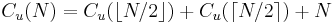
Dabei stehen die Zeichen und für abrunden bzw. aufrunden, weil ein Problem mit ungeradem N nicht in zwei exakt gleiche Teile zerlegt werden kann. Um diese Komplikation zu vermeiden, beschränken wir uns im folgenden auf den Fall  (mit etwas höherem Aufwand kann man zeigen, dass diese Einschränkung nicht notwendig ist und die Resultate für alle N gelten). Die vereinfachte Aufwandsformel lautet:
(mit etwas höherem Aufwand kann man zeigen, dass diese Einschränkung nicht notwendig ist und die Resultate für alle N gelten). Die vereinfachte Aufwandsformel lautet:
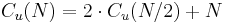
Durch Einsetzen der Formel für N/2 erhalten wir:
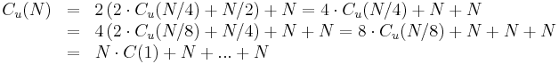
Die Rekursion endet, weil für ein Array der Größe
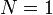
keine Vergleiche mehr benötigt werden, also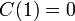
gilt. Mit ist dies aber gerade nach 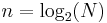
Zerlegungen der Fall. Das entspricht gerade der Anzahl der Summanden N in obiger Formel. Merge Sort benötigt also im ungünstigen Fall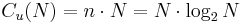
Operationen.
Günstiger Fall
Dieser Fall tritt ein, wenn das Array bereits sortiert war. Dann werden in merge() zuerst alle Elemente des linken Teilarrays gewählt, und danach wird das gesamte rechte Teilarray an res angefügt. Dafür benötigt man N/2 Vergleiche. Damit ist die Anzahl der Vergleiche genau halb so groß wie im ungünstigen Fall. Die Anzahl der Kopieroperationen ist aber in beiden Fällen gleich. Diese Operationen dominieren die Laufzeit, die sich somit im günstigen und ungünstigen Fall nicht wesentlich unterscheidet.
Stabilität
Merge Sort ist stabil, weil merge() bei gleichen Elementen in left und right dem Element aus left den Vorzug gibt (wegen left[i] <= right[j]). Da die Elemente des linken Teilarrays vor der Sortierung vor den Elementen des rechten Teilarrays legen, bleibt die Reihenfolge gleicher Elemente somit erhalten.
Weitere Eigenschaften von MergeSort
- Mergesort ist im Wesentlichen unempfindlich gegenüber der ursprünglichen Reihenfolge der Eingabedaten. Grund dafür ist
- die vollständige Aufteilung des Ausgangsarrays in Arrays der Länge 1 und
- dass merge(left, right) die Vorsortierung nicht ausnutzt, d.h. die Komplexität von merge(left, right) ist sortierungsunabhängig.
- Diese Eigenschaft kann unerwünscht sein, wenn ein Teil des Arrays oder gar das ganze Array schon sortiert ist. Es wird nämlich in jedem Fall das ganze Array neu sortiert. Die Python-Sortierfunktion (list.sort()), die Merge Sort verwendet, implementiert deshalb eine Reihe von Optimierungen, damit das Sortieren von (teilweise) sortierten Arrays schneller geht als das Sortieren zufälliger Arrays, weil dieser Fall in der Praxis sehr häufig vorkommt.
- Merge Sort eignet sich für das Sortieren von verketteten Listen, weil die Listenelemente stets von vorn nach hinten durchlaufen werden. In diesem Fall muss merge(left, right) keine neue Liste res für das Ergebnis anlegen, sondern kann einfach die Verkettung der Listenelemente von left und right entsprechend anpassen. In diesem Sinne arbeitet Merge Sort auf verketten Listen "in-place", d.h. es wird kein zusätzlicher Speicher benötigt.
- Im Gegensatz dazu benötigt die Array-Version von merge(left, right), die wir hier verwenden, zusätzlichen Speicher für das Ergebnis res.
Merge Sort in Python
Die Funktion list.sort() in Python benutzt intern Merge Sort, allerdings in einer hochoptimierten Fassung. Die Optimierungen betreffen die Beschleunigung der Sortierung von teilweise sortierten oder kleinen Arrays sowie die Verringerung des Speicherverbrauchs. Eine ausführliche Diskussion der Python-Lösung findet man im File listsort.txt im Python-SVN.
Quicksort
- Quicksort wurde in den 60er Jahren von Charles Antony Richard Hoare entwickelt. Es gibt viele Implementierungen von Quicksort (vgl. Quicksort in Wikipedia).
- Dieser Algorithmus gehört zu den "Teile und herrsche"-Algorithmen (divide-and-conquer) und ist der Standardalgorithmus für Sortieren.
- Im Gegensatz zu Merge Sort wird das Problem aber nicht immer in zwei fast gleich große Teilprobleme zerlegt. Dadurch vermeidet man, dass zusätzlicher Speicher benötigt wird (Quick Sort arbeitet auch für Arrays "in place"). Allerdings erkauft man sich dies dadurch, dass Quick Sort bei ungünstigen Eingaben (die Bedeutung von "ungünstig" ist je nach Implementation verschieden) nicht effizient arbeitet. Da solche Eingaben jedoch in der Praxis fast nie vorkommen, tut dies der Beliebtheit von Quicksort keinen Abbruch.
Algorithmus
Wie Merge Sort arbeitet Quick Sort rekursiv, d.h. Quick Sort wird auf wiederholt auf immer kleinere Teilprobleme angewendet. Damit dies in-place geschehen kann, muss der Algorithmus die Grenzen das aktuell zu bearbeitenden Teilarrays kennen. Damit der Benutzer die Grenzen nicht explizit angeben muss, implementieren wir zunächst eine convenience function, die die eigentliche Funktionalität kapselt:
def quickSort(a): # sortiere Array 'a' in-place
quickSortImpl(a, 0, len(a)-1) # rufe den eigentlichen Algorithmus mit Arraygrenzen auf
quickSortImpl() bereitet in der Funktion partition() die Daten zuerst vor und ruft sich danach rekursiv für das linke und rechte Teilarray auf:
def quickSortImpl(a, l, r):
"""a ist das zu sortierende Array,
l und r sind die linke und rechte Grenze (inklusive) des zu sortierenden Bereichs"""
if r > l: # Rekursionsabschluss: wenn r <= l, enthält der Bereich höchstens ein Element
# und muss nicht mehr sortiert werden
k = partition(a, l, r) # k ist der Index des sog. Pivot-Elements (s. u.)
quickSortImpl(a, l, k-1) # rekursives Sortieren des linken ...
quickSortImpl(a, k+1, r) # ... und rechten Teilarrays
Der Schlüssel des Algorithmus ist offensichtlich die Funktion partition. Diese wählt ein Element des Arrays aus (das Pivot-Element) und bringt es an die richtige Stelle (also an den Index k, der von partition zurückgegeben wird). Außerdem stellt sie sicher, dass alle Elemente in der linken Teilliste (Index < k) kleiner als a[k], und alle Elemente in der rechten Teilliste größer als a[k] sind. Nach partition gelten also die folgenden Axiome:
-
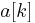
ist sortiert, d.h. dieses Element ist am endgültigen Platz. -
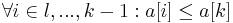
-
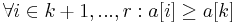
l r
+---+---+---+---+---+---+---+---+---+
Array: | | | | |\\\| | | | |
+---+---+---+---+---+---+---+---+---+
\______ _____/ k \______ _____/
\/ \/
<=a[k] >=a[k] (a[k] ist das Pivot-Element)
Die Position von k richtet sich also offensichtlich danach, wie viele Elemente im Bereich l bis r kleiner bzw. größer als das gewählte Pivot-Element sind. Der Wahl eines guten Pivot-Elements kommt demnach eine große Bedeutung zu (s.u.).
In der einfachsten Version wird partition wie folgt definiert:
def partition(a, l, r):
pivot = a[r] # Pivot-Element. Hier wird willkürlich das letzte Element verwendet.
i = l # i und j sind Laufvariablen
j = r - 1
while True:
while i < r and a[i] <= pivot:
i += 1 # finde von links das erste Element > pivot
while j > l and a[j] >= pivot:
j -= 1 # finde von rechts das ersten Element < pivot
# (von links gesehen ist dies das letzte Element < pivot)
if i < j: # a[i] und a[j] sind beide auf der falschen Seite des Pivot
a[i], a[j] = a[j], a[i] # => vertausche sie
else: # alle Elemente sind auf der richtigen Seite
break # => Schleife beenden
a[r] = a[i] # schaffe eine Lücke für das Pivot
# wegen a[i] >= pivot gehört das bisherige a[i] auf die rechte Seite
# wegen a[j] <= pivot und i >= j ist i die richtige Position
a[i] = pivot # bringe das Pivot an seine endgültige Position i
return i # gib die engültige Position des Pivots zurück
Die folgende Skizze verdeutlicht das Austauschen
p
+---+---+---+---+---+---+---+---+---+
Array: | | | | | | | | |\\\|
+---+---+---+---+---+---+---+---+---+
------> a[i]>p a[j]<p <-----
| |
+---------------+
Diese zwei Elemente werden ausgetauscht.
Dies wird wiederholt, bis sich die Indizes i und j treffen oder einander überholen. Am Schluss wird das Pivot-Element an die richtige Stelle verschoben:
p
+---+---+---+---+---+---+---+---+---+
Array: | | | | |\\\| | | | |
+---+---+---+---+---+---+---+---+---+
i
-----------------> <-----------------
Beispiel: Partitionieren des Arrays [A,S,O,R,T,I,N,G,E,X,A,M,P,L,E] mit Pivot 'E'.
l,i --> <-- j r
+---+---+---+---+---+---+---+---+---+---+---+---+---+---+---+
| A | S | O | R | T | I | N | G | E | X | A | M | P | L | E |
+---+---+---+---+---+---+---+---+---+---+---+---+---+---+---+
i <--------- Vertauschen ---------> j r
+---+---+---+---+---+---+---+---+---+---+---+---+---+---+---+
| A | S | O | R | T | I | N | G | E | X | A | M | P | L | E |
+---+---+---+---+---+---+---+---+---+---+---+---+---+---+---+
i <--- Vertauschen ---> j r
+---+---+---+---+---+---+---+---+---+---+---+---+---+---+---+
| A | A | O | R | T | I | N | G | E | X | S | M | P | L | E |
+---+---+---+---+---+---+---+---+---+---+---+---+---+---+---+
j i (j hat i überholt) r
+---+---+---+---+---+---+---+---+---+---+---+---+---+---+---+
| A | A | E | R | T | I | N | G | O | X | S | M | P | L | E | --> Hier wird die
+---+---+---+---+---+---+---+---+---+---+---+---+---+---+---+ Schleife verlassen.
i <------------- Vertauschen -------------> r
+---+---+---+---+---+---+---+---+---+---+---+---+---+---+---+
| A | A | E | R | T | I | N | G | O | X | S | M | P | L | E |
+---+---+---+---+---+---+---+---+---+---+---+---+---+---+---+
k=i
+---+---+---+---+---+---+---+---+---+---+---+---+---+---+---+
| A | A | E | E | T | I | N | G | O | X | S | M | P | L | R | --> Hier wird partition() beendet.
+---+---+---+---+---+---+---+---+---+---+---+---+---+---+---+
Das Element 'E' in a[k] (das ehemalige Pivot) ist jetzt an seiner endgültigen Position. Alle Elemente links von a[k] sind kleiner oder gleich 'E', alle Elemente rechts davon sind größer. Weitere ausführliche Erklärungen der Implementation findet man bei Sedgewick.
Laufzeit
Die allgemeine Rekursionsformel für die Laufzeit der äußeren Schleife lautet
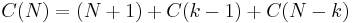
wobei
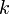
der Index des Pivotelements nach der Ausführung von partition() ist. Der Term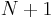
ist die Anzahl der Vergleiche, die partition() benötigt: Da normalerweise (falls es keine weiteren Elemente mit dem Wert des Pivots gibt) am Ende von partition() die Bedingung j == i-1 gilt, wurden die Elemente a[i] und a[j] jeweils zweimal mit dem Pivot verglichen (einmal in der i-Schleife und einmal in der j-Schleife), während die übrigen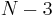
Elemente nur einmal verglichen wurden. Das sind insgesamtAllerdings können wir die Rekursionsformel nicht auflösen, ohne zu kennen. Wir müssen deshalb Annahmen über machen und untersuchen wieder den ungünstigen, günstigen und typischen Fall.
Ungünstiger Fall
Der ungünstige Fall tritt ein, wenn immer am Rand des Bereichs liegt. Dies tritt z.B. dann ein, wenn das Array bereits vor Beginn sortiert war. Dann ist das Pivot-Element a[r] immer das größte Element jedes Bereichs und verbleibt nach der Ausführung von partition() an dieser Position, so dass gilt. Entsprechendes gilt für absteigend sortierte Arrays: Hier ist das Pivot immer das kleinste Element und wird an den Anfang des Bereichs verschoben. Die Rekursion spezialisiert sich dann als
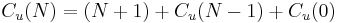
Das Sortieren eines leeren Arrays erfordert gar keine Vergleiche, es gilt also
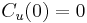
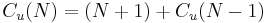
Dies ist fast die gleiche Formel wie bei Selection Sort, und durch sukzessives Einsetzen erhalten wir:
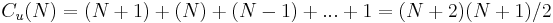
Unter diesen Bedingungen ist Quick Sort also noch langsamer als Selection Sort. Wir beschreiben unten, wie man verhindert, dass dieser ungünstige Fall jemals auftritt.
Günstiger Fall
Der bestmögliche Fall tritt ein, wenn partition() das Array in zwei gleich große Hälften teilt, so dass gilt. Dann ist die Anzahl der Vergleiche
Dies ist die gleiche Formel wie bei Merge Sort, und durch sukzessives Einsetzen erhalten wir
In der Praxis ist Quick Sort sogar noch etwas schneller als Merge Sort, weil die Daten nicht in ein temporäres Array kopiert werden müssen. Man sagt, dass Quick Sort "in-place", also im zu sortierenden Array selbst, operiert.
Typischer Fall
Es stellt sich nun die Frage, welcher Fall in der Praxis typischerweise auftritt - der schlechte oder der günstige? Als "typischen Fall" betrachten wir die Situation, dass das Array zu Beginn zufällig sortiert war. Bei zufälliger Sortierung hat jeder Index die gleiche Wahrscheinlichkeit, im Ende von partition() als Pivot-Position herauszukommen. Wir mitteln deshalb über alle möglichen Positionen:
- für
wobei über alle möglichen Teilungspunkte läuft. Die Summe (der mittlere Aufwand über alle möglichen Zerlegungen) kann vereinfacht werden zu
weil alle Terme der Summe zweimal vorkommen (beispielsweise ergibt sich einmal aus für , und einmal aus für ). Die Auflösung der Formel ist etwas trickreich. Wir multiplizieren zunächst beide Seiten mit N:
Durch die Substitution erhalten wir die entsprechende Formel für N-1:
Wir subtrahieren die Formel für N-1 von der Formel für N und eliminieren dadurch die Summe (nur der letzte Summand der ersten Summe bleibt übrig):
Nach Vereinfachung erhalten wir die rekurrente Beziehung
Wir teilen jetzt beide Seiten durch
Sukzessives Einsetzen der Formel für , etc. bis liefert
![\begin{array}{rcl}
C_t(N) &=& \frac{N+1}{N}\left(\frac{N}{N-1}C_t(N-2) + 2\right) + 2\frac{N+1}{N+1} \\
&& \\
&=& \frac{N+1}{N-1}C_t(N-2) + 2(N+1)\left(\frac{1}{N}+\frac{1}{N+1}\right)\\
&& \\
&=& \frac{N+1}{N-1}\left(\frac{N-1}{N-2}C_t(N-3) + 2\right) + 2(N+1)\left(\frac{1}{N}+\frac{1}{N+1}\right)\\
&& \\
&=& \frac{N+1}{N-2}C_t(N-3) + 2(N+1)\left(\frac{1}{N-1}+\frac{1}{N}+\frac{1}{N+1}\right)\\
&& \\
&=& \frac{N+1}{2}C(1) + 2(N+1)\left(\frac{1}{3}+...+\frac{1}{N+1}\right)\\
&& \\
&=& 2(N+1)\left(\frac{1}{3}+...+\frac{1}{N+1}\right)\\
&& \\
&<& 2(N+1)\sum_{k=1}^{N+1} \frac{1}{k} = 2(N+1) H_{N+1}
\end{array}](../images/3d776d9cbd29a91e18f29330496ab3cc.png)
Die Zahl ist die -te harmonic number (d.h. Partialsumme der harmonischen Reihe, siehe Wikipedia), die man für hinreichend große N gut durch ein Integral approximieren kann:
Somit benötigt Quick Sort im typischen Fall
Vergleiche. Quick Sort ist demnach für den praktischen Einsatz geeignet, weil es sich im typischen Fall fast genauso verhält wie im günstigen Fall.
Stabilität
Quick Sort ist nicht stabil, weil beim Vertauschen in partition() die Reihenfolge von Elementen mit gleichem Schlüssel umgekehrt werden kann.
Verbesserungen des Quicksort-Algorithmus
Günstige Selektion des Pivot-Elements
Durch geschickte Wahl des Pivot-Elements kann man erreichen, dass der ungünstige Fall (quadratische Laufzeit) nur mit extrem kleiner Wahrscheinlichkeit eintritt. Zwei Möglichkeiten haben sich bewährt:
- Anstatt des letzten Elements des Teilarrays wählt man mit Hilfe eines Zufallszahlengenerators einen zufälligen Index (in Python: m = random.randint(l, r)) und wählt das Element a[m] als Pivot. Dadurch wird Quick Sort unempfindlich gegenüber bereits sortierten Arrays, weil die Teilung im Mittel wie bei einem zufällig sortierten Array erfolgt. Die Laufzeit entspricht dann dem typischen Fall in obiger Laufzeitberechnung.
- Median (mittlerer Wert) von drei Kandidaten: Sortiere zunächst nur 3 willkürlich gewählte Elemente (z.B. a[l], a[(l+r)/2] und a[r]) und wähle den nach der Sortierung mittleren als Pivot ("median-of-three"-Methode). Dadurch wird es sehr unwahrscheinlich, dass man immer ein ungünstiges Pivot erwischt. Ist das Array z.B. bereits sortiert, kommt als Median immer das Element a[(l+r)/2] heraus, so dass alle Abschnitte in der Mitte geteilt werden - der günstige Fall. Um noch sicherer zu gehen, kann man auch mehr Kandidaten (z.B. neun) wählen.
In beiden Fällen ist es praktisch ausgeschlossen, dass ein Eingabearray so angeordnet ist, dass in jedem Teilarray gerade das kleinste oder größte Element als Pivot gewählt wird. Nur dann könnte der ungünstige Fall jedoch eintreten, was somit effektiv verhindert wird. Sollte es dennoch einmal schief gehen, kann man immer noch die Anzahl der Aufrufe von partition() mitzählen und zu einem anderen Sortieralgorithmus wechseln (z.B. zu Merge Sort oder Heap Sort, die auch im schlechtesten Fall schnell sind), wenn diese Zahl eine kritische Grenze (z.B. für ein geeignetes  ) überschreitet. Fast immer wird aber Quick Sort schneller sein als die Alternativen.
) überschreitet. Fast immer wird aber Quick Sort schneller sein als die Alternativen.
Alternatives Sortieren kleiner Intervalle
Für kleine Arrays (bis zu einer gegebenen Größe K) ist das "Teile und herrsche"-Prinzip nicht die effizienteste Herangehensweise, weil der höhere Verwaltungsaufwand dieser Algorithmen nicht mehr durch den Geschwindigkeitsgewinn kompensiert wird. In der Praxis hat sich gezeigt, dass für Arrays bis zur Größe Insertion Sort am schnellsten arbeitet. Man modifiziert Quick Sort deshalb wie folgt:
def quickSortImpl(a, l, r):
if r-l <= 30: # sortiere kleine (Sub-)Arrays mit Insertion Sort ...
insertionSortSubarray(a, l, r)
else: # ... und große mit Quick Sort
k = partition(a, l, r)
quickSortImpl(a, l, k-1)
quickSortImpl(a, k+1, r)
Die Erweiterung von Insertion Sort für beliebige Subarrays ist trivial:
def insertionSortSubarray(a, l, r):
for i in range(l+1, r+1):
current = a[i]
j = i
while j > l:
if current < a[j-1]:
a[j] = a[j-1]
else:
break
j -= 1
a[j] = current
Im Spezialfall (Array mit maximal 3 Elementen) kann man sogar die Schleifen eliminieren (sogenanntes loop unrolling):
def sortThree(a, l, r):
if r > l and a[l+1] < a[l]: # Stelle sicher, dass a[l] und a[l+1] relativ zueinander sortiert sind.
a[l], a[l+1] = a[l+1], a[l]
if r == l + 2:
if a[r] < a[l]: # Stelle sicher, dass a[l] und a[r] relativ zueinander sortiert sind.
a[l], a[r] = a[r], a[l] # Danach ist a[l] auf jeden Fall das kleinste Element.
if a[r] < a[r-1]: # Stelle sicher, dass a[r-1] und a[r] relativ zueinander sortiert sind.
a[r], a[r-1] = a[r-1], a[r] # Jetzt ist a[r] auf jeden Fall das größte Element und das Array damit sortiert.
Die Optimierung für kleine Arrays wird für alle komplexen Sortieralgorithmen (also auch Merge Sort) gern verwendet.
Beseitigung der Rekursion
Rekursive Funktionsaufrufe sind typischerweise teurer als Schleifen. Wir lernen im Kapitel Iteration versus Rekursion, dass man Endrekursion stets durch die Verwendung eines Stacks in eine Schleife umwandeln kann. Im Vorgriff auf dieses. Nach jeder Partitionierung wird das größere Teilintervall auf dem Stack abgelegt und das kleinere Teilintervall direkt weiterverarbeitet (hierdurch wird sichergestellt, dass die maximale Größe des Stacks minimiert wird).
def quicksortNonRecursive(a, l, r):
stack = [(l,r)] # initialisiere den Stack
while len(stack) > 0:
if r > l:
k = partition(a, l, r)
if (k-l) > (r-k):
stack.append((l,k-1)) # remember bigger subproblem on stack
l = k+1 # and solve smaller one directly
else:
stack.append((k+1, r)) # remember bigger subproblem on stack
r = k-1 # and solve smaller one directly
else:
l, r = stack.pop() # get next subproblem from stack
Die folgende Skizze verdeutlicht die Verwendung des Stacks.
+---+---+---+---+---+---+---+
| Q | U | I | C | K | S | O |
+---+---+---+---+---+---+---+
+---+---+---+===+---+---+---+
| K | C | I |=O=| Q | S | U |
+---+---+---+===+---+---+---+
\_________/
push
+---+===+---+
| C |=I=| K |
+---+===+---+
\_/
push
+===+
|=C=|
+===+
+===+
|=K=|
+===+
+---+---+===+
| Q | S |=U=|
+---+---+===+
+---+===+
| Q |=S=|
+---+===+
+===+
|=Q=|
+===+
+---+---+---+---+---+---+---+
| C | I | K | O | Q | S | U |
+---+---+---+---+---+---+---+
Quick Sort in C++
Die Implementation der C++-Standardfunktion std::sort(), die mit dem Gnu-Compiler mitgeliefert wird, benutzt intern Introsort, eine hochoptimierte Kombination von Quicksort und Heap Sort.